Étudiant en Génie Mécanique · L3 Université de Poitiers
Passionné par l'ingénierie mécanique, je cherche un stage à partir d'avril 2026 pour confronter mes acquis universitaires au monde industriel. Ce portfolio regroupe un aperçu de mes projets d'ingénierie réalisés au fil de mon parcours.
Étudiant en troisième année de Licence Génie Mécanique à l'Université de Poitiers, je bénéficie d'un parcours international ayant débuté en Pologne, à Kielce University of Technology, où j'ai suivi deux années de formation en anglais. Cette expérience m'a permis d'acquérir une aisance en anglais, aussi bien à l'oral qu'à l'écrit, notamment en anglais technique, et de m'adapter pleinement à un environnement bilingue. J'y ai également acquis des bases solides en SolidWorks ainsi qu'une première expérience en programmation CNC. À Poitiers, ma maîtrise de SolidWorks s'est approfondie au fil de nombreux projets de bureau d'études, allant de la conception de pièces mécanosoudées aux simulations de résistance des matériaux. J'ai également développé une solide compétence en automatisme — analyse de cahier des charges, rédaction de GRAFCET — avec la programmation en Structured Text sur B&R Automation Studio. Désireux de confronter mes acquis au monde professionnel, je suis activement à la recherche d'un stage en ingénierie mécanique à partir d'avril 2026.
Formation
Mon cursus académique
Université de Poitiers
Licence Génie Mécanique — L3
Poitiers, France
2025 — Présent
S5
S6
Mathématique et Génie InformatiqueMécanique et Démarche de ConceptionContrôle Commande et Conception MécaniqueMécanique des Milieux Continus SolidesUE5 Anglais et Professionnalisation (S5)
Mathématique et Méthodes NumériquesModélisation, Mécanismes et Génie MécaniqueMécanique des Fluides et TechnologieTechniques d'IndustrialisationUE5 Anglais et Professionnalisation (S6)
Kielce University of Technology
Licence Génie Mécanique — L1 / L2
Kielce, Pologne
2023 — 2025
S1
S2
S3
S4
CalculGénie ÉlectriqueErgonomie et Santé et Sécurité au TravailFondamentaux de la Standardisation et de l'InnovationHES1Les Technologies de l'InformationAlgèbre LinéaireChimie TechniqueDessin TechniquePhysique TechniqueThéorie des Machines
Génie AutomobileMécanique de l'Ingénieur IDessin TechniqueLangue Étrangère (Polonais)Fondamentaux du Moulage / de la FonderieFondamentaux de l'ÉlectroniqueFondamentaux du Façonnage des MétauxFondamentaux du Prototypage RapideFondamentaux du SoudageMathématiquesScience des Métaux IMicrotechnologie et NanotechnologieLes Plastiques et les Composés
Dessin Technique Assisté par OrdinateurMécanique de l'Ingénieur IILangue Étrangère (Polonais)Fondamentaux du Moulage / de la Fonderie (Lab)Fondamentaux de la Science InformatiqueFondamentaux du Façonnage des Métaux (Lab)Fondamentaux du Soudage (Lab)Protection de la Propriété IntellectuelleTechnologie LaserScience des Métaux IIMétrologie IRésistance des MatériauxÉducation Physique
Mécanique des FluidesLangue Étrangère (Polonais)Fondamentaux de la Programmation CNCFondamentaux de la Technique de RéglageFondamentaux de la Conception des MachinesFondamentaux de l'UsinageGénie de FabricationMétrologie IIThéorie de la Machinerie et des MécanismesÉducation Physique
Compétences & Expertise
Mes outils et savoir-faire
SolidWorks
Avancé
Python (NumPy)
Intermédiaire
B&R Automation Studio
Intermédiaire
LaTeX
Avancé
Microsoft Office
Avancé
Langues
Mes compétences linguistiques
🇬🇧
Anglais
C1 — IELTS
🇫🇷
Français
C1 — TCF
🇩🇿
Arabe
Langue maternelle
Mes Certifications
Certifications professionnelles obtenues
CSWA — SolidWorks Design Associate
Février 2026
Mon Parcours
Les étapes clés de ma formation
2023 — 2025
Kielce University of Technology
Deux années d'études en anglais au sein de Kielce University of Technology en Pologne, où j'ai acquis des bases solides en génie mécanique. J'ai eu l'opportunité de travailler sur des machines CNC et de développer une compréhension approfondie des procédés de fabrication. Cette expérience internationale m'a permis de renforcer mon niveau d'anglais et de m'adapter à un environnement multiculturel.
2025 — Présent
Université de Poitiers
En intégrant l'Université de Poitiers en L3, j'ai eu la chance de travailler sur de nombreux projets de conception mécanique en travaux pratiques, ce qui a considérablement renforcé ma maîtrise de SolidWorks. J'ai également découvert l'automatisme avec B&R Automation Studio et acquis de bonnes bases en programmation ST. Ces projets concrets m'ont permis de développer une approche rigoureuse de l'ingénierie mécanique.
Galerie de Projets
Mes réalisations en bureau d'études
L3
Ridoir hydraulique — Re-conception mécano-soudée
Re-conception et optimisation d'un ridoir mécano-soudé : simplification, simulation éléments finis et allègement de 32%.
SolidWorksSimulation FEAConception
L3
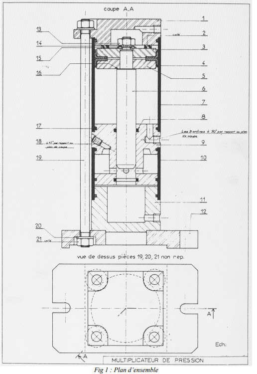
Multiplicateur de pression hydraulique
Conception et optimisation de pièces de fonderie aluminium pour vérin hydraulique : tête de vérin et embase, validées par simulation FEA.
SolidWorksFonderieSimulation FEA
L3
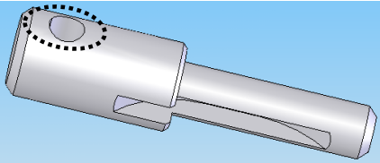
Montage d'usinage — Perçage de pièces cylindriques
Conception d'un montage d'usinage isostatique pour le perçage de pièces cylindriques sur perceuse à colonne.
SolidWorksIsostatismeConception
L2
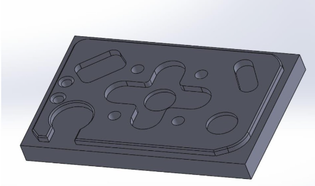
Programmation CNC — Heidenhain iTNC 530
Développement d'un programme d'usinage complet pour une pièce 150×100 mm : contournage, poches, rainures et perçage.
SolidWorksHeidenhainCNC
L3
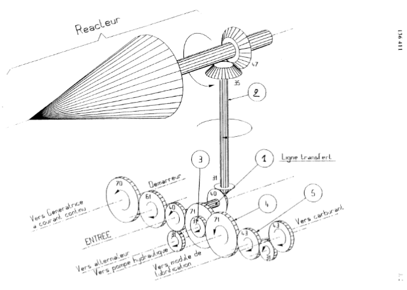
Renvoi conique aéronautique — Conception et modélisation CAO
Conception d'un renvoi conique aéronautique : dimensionnement des roulements, modélisation des engrenages et étude comparative de deux architectures de carter.
SolidWorksDimensionnementConception
L3
Machine de poteyage sur portique cartésien
Programmation du cycle automatisé d'une machine de poteyage pour le dépôt de carbone sur demi-moules en verre, avec balayage en zigzag via portique cartésien.
Ce projet consistait à développer et programmer le cycle automatisé d'une machine de poteyage utilisée pour déposer une couche de carbone sur des demi-moules en verre afin de faciliter le démoulage. Le système repose sur un portique cartésien motorisé par des moteurs pas-à-pas permettant de déplacer les moules au-dessus d'un brûleur fixe selon une stratégie de balayage définie.
Le travail a consisté à définir les paramètres fonctionnels du cycle, concevoir le GRAFCET de commande, programmer le cycle en Structured Text puis valider le fonctionnement en simulation et sur installation réelle.
Fonction du programme développé
Le programme automatise entièrement le cycle de poteyage :
Initialisation et homing des axes X et Y
Positionnement au point de départ (deltaX, deltaY)
Balayage en zigzag de la zone de traitement
Synchronisation des déplacements X et Y avec alternance montée/descente
Gestion de la flamme (allumage au début, extinction en fin de cycle)
Retour automatique en position initiale
Le code gère les boucles de balayage permettant d'alterner les déplacements verticaux pendant l'avancement horizontal afin d'assurer une couverture complète et homogène de la surface.
Code source (Structured Text)
PROGRAM _INIT
// Initialisation des variables sans valeur par defaut
aNom := 10.0; // Acceleration nominale [mm/s^2]
vNom := 20.0; // Vitesse nominale [mm/s]
// Initialisation des parametres du cycle de poteyage
a := 250.0; // Longueur du moule [mm]
b := 120.0; // Largeur du moule [mm]
pas := 30.0; // Pas de balayage [mm]
deltaX := 10.0; // Decalage initial axe X [mm]
deltaY := 10.0; // Decalage initial axe Y [mm]
// Initialisation des positions et compteur
posX := 0.0;
posY := 0.0;
i := 0;
// Initialisation variables detection front montant
ihm_start_prev := FALSE;
// Initialisation flamme
Flamme := FALSE;
END_PROGRAM
PROGRAM _CYCLIC
// ============================================
// LEGENDE DES COMMANDES ET INFORMATIONS :
// COMMANDES (Cmd_X, Cmd_Y) :
// BpOn = Allumer/activer l'axe (mise sous tension)
// BpHome = Demander homing (recherche de l'origine)
// MoveAbsolute.Acc = Definir l'acceleration du mouvement
// MoveAbsolute.Vit = Definir la vitesse du mouvement
// MoveAbsolute.Pos = Definir la position destination
// MoveAbsolute.BpMove = Demarrer le mouvement
// INFORMATIONS (Info_X, Info_Y) :
// PowerOn = L'axe est alimente/sous tension
// IsHomed = L'axe a termine le homing
// Standstill = L'axe est arrete (arrive a destination)
// ============================================
// Logique normale du grafcet
CASE etat OF
0: // ETAT 0 : Attente bouton ON
IF ihm_on THEN
etat := 1;
Cmd_X.BpOn := TRUE;
Cmd_Y.BpOn := TRUE;
END_IF
1: // ETAT 1 : Attente alimentation des axes
IF Info_X.PowerOn AND Info_Y.PowerOn THEN
etat := 2;
END_IF
2: // ETAT 2 : Attente bouton HOME
IF ihm_home THEN
ihm_home := FALSE;
Cmd_X.BpHome := TRUE;
Cmd_Y.BpHome := TRUE;
etat := 3;
END_IF
3: // ETAT 3 : Attente fin du homing
IF Info_X.Standstill AND Info_Y.Standstill
AND Info_X.IsHomed AND Info_Y.IsHomed THEN
posX := 0.0;
posY := 0.0;
etat := 4;
END_IF
4: // ETAT 4 : Attente bouton START
Cmd_X.MoveAbsolute.BpMove := FALSE;
Cmd_Y.MoveAbsolute.BpMove := FALSE;
IF NOT ihm_on THEN
etat := 5;
Cmd_X.BpOn := FALSE;
Cmd_Y.BpOn := FALSE;
ELSIF ihm_start AND NOT ihm_start_prev THEN
IF posX = 0.0 AND posY = 0.0 THEN
// Lancer le cycle de poteyage
Flamme := TRUE;
posX := deltaX;
posY := deltaY;
Cmd_X.MoveAbsolute.Acc := aNom;
Cmd_X.MoveAbsolute.Vit := vNom;
Cmd_X.MoveAbsolute.Pos := posX;
Cmd_X.MoveAbsolute.BpMove := TRUE;
Cmd_Y.MoveAbsolute.Acc := aNom;
Cmd_Y.MoveAbsolute.Vit := vNom;
Cmd_Y.MoveAbsolute.Pos := posY;
Cmd_Y.MoveAbsolute.BpMove := TRUE;
etat := 10;
ELSE
// Retour a l'origine
Flamme := FALSE;
posX := 0.0;
posY := 0.0;
Cmd_X.MoveAbsolute.Pos := posX;
Cmd_X.MoveAbsolute.BpMove := TRUE;
Cmd_Y.MoveAbsolute.Pos := posY;
Cmd_Y.MoveAbsolute.BpMove := TRUE;
etat := 4;
END_IF
END_IF
ihm_start_prev := ihm_start;
5: // ETAT 5 : Arret/Redemarrage des axes
IF NOT Info_X.PowerOn AND NOT Info_Y.PowerOn THEN
IF ihm_on THEN
etat := 1;
Cmd_X.BpOn := TRUE;
Cmd_Y.BpOn := TRUE;
END_IF
ELSIF Info_X.PowerOn AND Info_Y.PowerOn THEN
etat := 4;
END_IF
10: // ETAT 10 : Arrivee position de depart (10,10)
IF Info_X.Standstill AND Info_Y.Standstill THEN
Cmd_X.MoveAbsolute.BpMove := FALSE;
Cmd_Y.MoveAbsolute.BpMove := FALSE;
posY := deltaY + a; // 10 + 250 = 260mm
Cmd_Y.MoveAbsolute.Pos := posY;
Cmd_Y.MoveAbsolute.BpMove := TRUE;
etat := 11;
END_IF
11: // ETAT 11 : Y monte vers 260mm
IF Info_Y.Standstill THEN
Cmd_Y.MoveAbsolute.BpMove := FALSE;
IF posX >= (deltaX + 3.0 * b) THEN
// Fin balayage : Y descend a 10mm
posY := deltaY;
Cmd_Y.MoveAbsolute.Pos := posY;
Cmd_Y.MoveAbsolute.BpMove := TRUE;
etat := 13;
ELSE
// X avance de +30mm
posX := posX + pas;
Cmd_X.MoveAbsolute.Pos := posX;
Cmd_X.MoveAbsolute.BpMove := TRUE;
etat := 12;
END_IF
END_IF
12: // ETAT 12 : X se deplace vers la droite
IF Info_X.Standstill THEN
Cmd_X.MoveAbsolute.BpMove := FALSE;
IF posX >= (deltaX + 3.0 * b) THEN
IF posY >= (deltaY + a - 1.0) THEN
posY := deltaY;
Cmd_Y.MoveAbsolute.Pos := posY;
Cmd_Y.MoveAbsolute.BpMove := TRUE;
etat := 13;
ELSE
etat := 14;
END_IF
ELSE
IF posY >= (deltaY + a - 1.0) THEN
posY := deltaY;
Cmd_Y.MoveAbsolute.Pos := posY;
Cmd_Y.MoveAbsolute.BpMove := TRUE;
etat := 13;
ELSE
posY := deltaY + a;
Cmd_Y.MoveAbsolute.Pos := posY;
Cmd_Y.MoveAbsolute.BpMove := TRUE;
etat := 11;
END_IF
END_IF
END_IF
13: // ETAT 13 : Y descend vers 10mm
IF Info_Y.Standstill THEN
Cmd_Y.MoveAbsolute.BpMove := FALSE;
IF posX >= (deltaX + 3.0 * b) THEN
etat := 14;
ELSE
posX := posX + pas;
Cmd_X.MoveAbsolute.Pos := posX;
Cmd_X.MoveAbsolute.BpMove := TRUE;
etat := 12;
END_IF
END_IF
14: // ETAT 14 : Fin du balayage
Cmd_X.MoveAbsolute.BpMove := FALSE;
Cmd_Y.MoveAbsolute.BpMove := FALSE;
etat := 4;
END_CASE;
END_PROGRAM
(* ============================================ *)
(* PARAMETRES DE MOUVEMENT *)
(* ============================================ *)
VAR
aNom : REAL; (* Acceleration nominale en mm/s² *)
vNom : REAL; (* Vitesse nominale en mm/s *)
dest : REAL; (* Destination sur x [mm] *)
(* BOUTONS DE L'INTERFACE (ENTREES) *)
ihm_on : BOOL; (* Bouton ON : demarrage machine *)
ihm_start : BOOL; (* Bouton START : depart du cycle *)
ihm_home : BOOL; (* Bouton HOME : prise d'origine *)
(* ETAT DU GRAPHCET *)
etat : USINT; (* Numero de l'etat actuel *)
(* DETECTION FRONT MONTANT *)
ihm_start_prev : BOOL; (* Memoire etat precedent START *)
(* GESTION FLAMME *)
Flamme : BOOL; (* TRUE = allumee, FALSE = eteinte *)
(* PARAMETRES DU CYCLE *)
a : REAL; (* Longueur du moule [mm] *)
b : REAL; (* Largeur du moule [mm] *)
pas : REAL; (* Pas de balayage [mm] *)
deltaX : REAL; (* Decalage initial axe X [mm] *)
deltaY : REAL; (* Decalage initial axe Y [mm] *)
(* VARIABLES DE POSITION *)
posX : REAL; (* Position courante axe X [mm] *)
posY : REAL; (* Position courante axe Y [mm] *)
i : USINT; (* Compteur de cycles *)
END_VAR
Les chronogrammes montrent un fonctionnement cohérent du cycle :
Vitesse X — cycles accélération / vitesse constante / décélération correspondant aux déplacements horizontaux
Vitesse Y — alternance montée / arrêt / descente correspondant au balayage vertical en zigzag
Les courbes confirment que la trajectoire respecte le pas de balayage et la stratégie programmée.
Validation expérimentale
Le bon fonctionnement du système a été vérifié expérimentalement en remplaçant le brûleur par un feutre et en utilisant une feuille blanche pour tracer la trajectoire. Le tracé obtenu confirme que le déplacement réel correspond à la trajectoire théorique programmée et valide le cycle automatisé.
Ridoir hydraulique — Re-conception et optimisation mécano-soudée
L'objectif du projet était de reconcevoir une pièce de ridoir initialement complexe à fabriquer afin de proposer une solution mécano-soudée plus simple, plus légère et adaptée à la fabrication industrielle, tout en garantissant sa résistance mécanique par simulation.
Analyse et modélisation initiale
Le travail a commencé par l'analyse complète d'un plan technique afin de comprendre la géométrie, les fonctions mécaniques et les contraintes de la pièce. Une modélisation 3D complète a ensuite été réalisée sous SolidWorks.
Modèle 3D de la pièce initiale
Plan technique — coupes et vues
Nouvelle conception mécano-soudée
La pièce a ensuite été repensée dans une logique de fabrication mécano-soudée. La conception a été simplifiée en décomposant la pièce en plusieurs éléments simples à usiner puis à assembler par soudage. Une nouvelle architecture a été proposée afin de supprimer certaines formes complexes d'usinage.
Vue 3D de la nouvelle conception mécano-soudée
Définition des zones de soudure
L'assemblage soudé a ensuite été défini en précisant les zones de cordons de soudure afin d'assurer la rigidité et la continuité mécanique de la pièce.
Position des cordons de soudure (zones rouges)
Validation par simulation éléments finis
Une validation mécanique a été réalisée par simulation éléments finis afin de vérifier la tenue de la pièce sous charge. Cette analyse a permis d'identifier les zones critiques, principalement autour des trous de fixation.
Simulation contraintes Von Mises — zone critique visible
Optimisation de la masse
La pièce a ensuite été optimisée afin de réduire sa masse tout en conservant ses performances mécaniques. Plusieurs modifications géométriques ont permis d'obtenir un allègement significatif.
Pièce initiale — 722,71 g
Pièce optimisée — 491,02 g
Masse initiale~723 g
Masse optimisée~491 g
Gain de masse~232 g (−32%)
Validation de la pièce optimisée
Une seconde simulation éléments finis a été réalisée sur la pièce optimisée afin de vérifier que l'allègement n'a pas compromis sa tenue mécanique. Les résultats montrent que la contrainte maximale de Von Mises atteint environ 296 MPa, très proche de la limite d'élasticité du matériau (283 MPa). La pièce résiste donc aux charges appliquées, mais se situe à la limite de sa capacité — ce qui confirme que l'optimisation a été poussée au maximum du potentiel du matériau.
Les zones critiques restent localisées autour des trous de fixation, où les concentrations de contraintes sont les plus élevées en raison de la géométrie.
Simulation Von Mises — pièce optimisée (contrainte max ≈ 296 MPa, limite élastique ≈ 283 MPa)
Résultat final
Le projet a permis de concevoir une pièce mécano-soudée optimisée, plus légère et adaptée à la fabrication industrielle, tout en conservant une tenue mécanique validée par simulation.
Vue 3D de la pièce finale optimisée
Programmation CNC — Usinage complet sur Heidenhain iTNC 530
SolidWorksHeidenhain iTNC 530KlartextCNCCAD/CAM
Objectif du projet
Ce projet de programmation CNC a consisté à développer un programme d'usinage complet pour une pièce de 150×100 mm en utilisant le système Heidenhain iTNC 530. Après la modélisation 2D/3D sous SolidWorks, quatre outils ont été sélectionnés pour réaliser des opérations de fraisage (contour, poches, rainures) et de perçage. Les paramètres technologiques (vitesse de coupe, avance, profondeur de passe) ont été optimisés pour chaque outil, et le programme généré a été simulé avec succès.
Modélisation 3D sous SolidWorks
La première étape a consisté à modéliser la pièce complète en 3D sous SolidWorks afin de définir précisément toutes les géométries à usiner : le contour extérieur avec ses rayons et congés, les poches circulaires et rectangulaires, les rainures inclinées et croisées, ainsi que les perçages.
Vue isométrique de la pièce
Vue de dessus
Mise en plan cotée
Une mise en plan complète a ensuite été réalisée avec toutes les cotations nécessaires à la programmation CNC : dimensions globales (150×100 mm), positions des centres de poches, diamètres des perçages, profondeurs d'usinage et la section B-B montrant le profil en coupe.
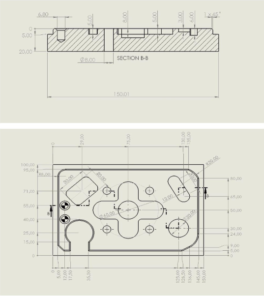
Mise en plan complète — Section B-B et vue de dessus cotée
Sélection des outils
Quatre outils ont été sélectionnés avec leurs paramètres technologiques optimisés :
Tool call 8 Z s2000 F200. — Fraise de contournage, utilisée pour le contour extérieur de la pièce
Tool call 5 Z s2000 F300. — Fraise pour poches et rainures, utilisée pour les poches circulaires, rectangulaires et les rainures
Tool call 4 Z1300 F300. — Foret principal, utilisé pour le perçage en motif polaire (4 trous)
Tool call 41 Z1300 F300. — Foret petit diamètre, utilisé pour le perçage unitaire
Programme CNC (Heidenhain Klartext — 62 lignes)
Le programme complet couvre les opérations suivantes : contournage extérieur, poche circulaire (CYCL 252), poche rectangulaire (CYCL 251), rainure inclinée (CYCL 253), perçage en motif polaire (CYCL 200 + CYCL 220), perçage unitaire, rainures croisées et poche circulaire centrale.
0 BEGIN PGM project MM
1 BLK FORM 0.1 Z X+0 Y+0 Z-20
2 BLK FORM 0.2 X+150 Y+100 Z+0
; ===== CONTOURNAGE EXTERIEUR (Outil 8) =====
3 TOOL CALL 8 Z S2000 F200
4 L Z+100 RO FMAX M3
5 L X+5 Y-20 RL
6 L Z-5
7 L X+5 Y+95
8 RND R8
9 L X+135 Y+95
10 CR X+145 Y+80 R+20 DR-
11 L X+145 Y+24
12 CT X+136 Y+9
13 L X+128.5 Y+5
14 L X+35.5
15 L Y+15
16 CC X+26.5 Y+25
17 C X+17.5 Y+15 DR+
18 L Y+5
19 L X+11
20 L X+5 Y+11
21 L X-20
22 L Z+50 FMAX
23 ;
; ===== POCHES ET RAINURES (Outil 5) =====
24 TOOL CALL 5 Z S2000 F300
25 L Z+50 RO FMAX M3
26 ;
27 L X+125 Y+30
28 CYCL DEF 252 CIRCULAR POCKET
Q215=0 ; MACHINING OPERATION
Q223=+20 ; CIRCLE DIAMETER
Q368=+0 ; ALLOWANCE FOR SIDE
Q207=AUTO ; FEED RATE FOR MILLING
Q351=1 ; CLIMB OR UP-CUT
Q201=-3 ; DEPTH
Q202=+5 ; PLUNGING DEPTH
Q369=+0 ; ALLOWANCE FOR FLOOR
Q206=AUTO ; FEED RATE FOR PLUNGING
Q338=0 ; INFEED FOR FINISHING
Q200=+5 ; SET-UP CLEARANCE
Q203=+0 ; SURFACE COORDINATE
Q204=+50 ; 2ND SET-UP CLEARANCE
Q370=0.8 ; TOOL PATH OVERLAP
Q366=+1 ; PLUNGE
Q385=AUTO ; FINISHING FEED RATE
29 CYCL CALL
30 ;
31 CYCL DEF 251 RECTANGULAR POCKET
Q215=0 ; MACHINING OPERATION
Q218=+30 ; FIRST SIDE LENGTH
Q367=+0 ; ANGLE OF ROTATION
Q207=AUTO ; FEED RATE FOR MILLING
Q351=1 ; CLIMB OR UP-CUT
Q201=-5 ; DEPTH
Q202=+5 ; PLUNGING DEPTH
Q369=+0 ; ALLOWANCE FOR FLOOR
Q206=AUTO ; FEED RATE FOR PLUNGING
Q338=0 ; INFEED FOR FINISHING
Q200=+5 ; SET-UP CLEARANCE
Q203=+0 ; SURFACE COORDINATE
Q204=+50 ; 2ND SET-UP CLEARANCE
Q370=0.8 ; TOOL PATH OVERLAP
Q366=+1 ; PLUNGE
Q385=AUTO ; FINISHING FEED RATE
32 CYCL CALL
33 ;
34 L X+125 Y+71
35 CYCL DEF 253 SLOT MILLING
Q215=0 ; MACHINING OPERATION
Q218=+32 ; SLOT LENGTH
Q219=+12 ; SLOT WIDTH
Q368=+0 ; ALLOWANCE FOR SIDE
Q374=+120 ; ANGLE OF ROTATION
Q367=+0 ; SLOT POSITION
Q207=AUTO ; FEED RATE FOR MILLING
Q351=1 ; CLIMB OR UP-CUT
Q201=-6 ; DEPTH
Q202=+5 ; PLUNGING DEPTH
Q369=+0 ; ALLOWANCE FOR FLOOR
Q206=AUTO ; FEED RATE FOR PLUNGING
Q338=0 ; INFEED FOR FINISHING
Q200=+5 ; SET-UP CLEARANCE
Q203=+0 ; SURFACE COORDINATE
Q204=+50 ; 2ND SET-UP CLEARANCE
Q366=+1 ; PLUNGE
Q385=AUTO ; FINISHING FEED RATE
36 CYCL CALL POS X+75 Y+50 Z+0
37 ;
; ===== PERCAGE MOTIF POLAIRE (Outil 4) =====
38 TOOL CALL 4 Z S1300 F300
39 CYCL DEF 200 DRILLING
Q200=+5 ; SET-UP CLEARANCE
Q201=-20 ; DEPTH
Q206=AUTO ; FEED RATE FOR PLUNGING
Q202=+5 ; PLUNGING DEPTH
Q210=0 ; DWELL TIME AT TOP
Q203=+0 ; SURFACE COORDINATE
Q204=+50 ; 2ND SET-UP CLEARANCE
Q211=0 ; DWELL TIME AT DEPTH
40 CYCL DEF 220 POLAR PATTERN
Q216=+75 ; CENTER IN 1ST AXIS
Q217=+50 ; CENTER IN 2ND AXIS
Q244=+60 ; PITCH CIRCLE DIAMETER
Q245=+45 ; STARTING ANGLE
Q246=+360 ; STOPPING ANGLE
Q247=+90 ; STEPPING ANGLE
Q241=+4 ; NR OF REPETITIONS
41 CYCL CALL
42 ;
; ===== PERCAGE UNITAIRE (Outil 41) =====
43 TOOL DEF 41
44 TOOL CALL 41 Z S1300 F300
45 L X+12 Y+40
46 CYCL DEF 200 DRILLING
Q200=+5 ; SET-UP CLEARANCE
Q201=-10 ; DEPTH
Q206=AUTO ; FEED RATE FOR PLUNGING
Q202=+5 ; PLUNGING DEPTH
Q210=0 ; DWELL TIME AT TOP
Q203=+0 ; SURFACE COORDINATE
Q204=+50 ; 2ND SET-UP CLEARANCE
Q211=0 ; DWELL TIME AT DEPTH
47 CYCL CALL
48 ;
49 ;
50 ;
; ===== RAINURES CROISEES + POCHE CENTRALE (Outil 5) =====
51 TOOL CALL 5 Z S2000 F300
52 CYCL DEF 253 SLOT MILLING
Q215=0 ; MACHINING OPERATION
Q218=+70 ; SLOT LENGTH
Q219=+20 ; SLOT WIDTH
Q368=+0 ; ALLOWANCE FOR SIDE
Q374=+90 ; ANGLE OF ROTATION
Q367=+0 ; SLOT POSITION
Q207=AUTO ; FEED RATE FOR MILLING
Q351=1 ; CLIMB OR UP-CUT
Q201=-5 ; DEPTH
Q202=+5 ; PLUNGING DEPTH
Q369=+0 ; ALLOWANCE FOR FLOOR
Q206=AUTO ; FEED RATE FOR PLUNGING
Q338=0 ; INFEED FOR FINISHING
Q200=+5 ; SET-UP CLEARANCE
Q203=+0 ; SURFACE COORDINATE
Q204=+50 ; 2ND SET-UP CLEARANCE
Q366=+1 ; PLUNGE
Q385=AUTO ; FINISHING FEED RATE
53 CYCL CALL POS X+75 Y+50 Z+0
54 ;
55 CYCL DEF 253 SLOT MILLING
Q215=0 ; MACHINING OPERATION
Q218=+70 ; SLOT LENGTH
Q219=+20 ; SLOT WIDTH
Q368=+0 ; ALLOWANCE FOR SIDE
Q374=+0 ; ANGLE OF ROTATION
Q367=+0 ; SLOT POSITION
Q207=AUTO ; FEED RATE FOR MILLING
Q351=1 ; CLIMB OR UP-CUT
Q201=-5 ; DEPTH
Q202=+5 ; PLUNGING DEPTH
Q369=+0 ; ALLOWANCE FOR FLOOR
Q206=AUTO ; FEED RATE FOR PLUNGING
Q338=0 ; INFEED FOR FINISHING
Q200=+5 ; SET-UP CLEARANCE
Q203=+0 ; SURFACE COORDINATE
Q204=+50 ; 2ND SET-UP CLEARANCE
Q366=+1 ; PLUNGE
Q385=AUTO ; FINISHING FEED RATE
56 CYCL CALL POS X+75 Y+50 Z+0
57 ;
58 L X+75 Y+50 Z+0
59 CYCL DEF 252 CIRCULAR POCKET
Q215=0 ; MACHINING OPERATION
Q223=+20 ; CIRCLE DIAMETER
Q368=+0 ; ALLOWANCE FOR SIDE
Q207=AUTO ; FEED RATE FOR MILLING
Q351=1 ; CLIMB OR UP-CUT
Q201=-8 ; DEPTH
Q202=+5 ; PLUNGING DEPTH
Q369=+0 ; ALLOWANCE FOR FLOOR
Q206=AUTO ; FEED RATE FOR PLUNGING
Q338=0 ; INFEED FOR FINISHING
Q200=+5 ; SET-UP CLEARANCE
Q203=+0 ; SURFACE COORDINATE
Q204=+50 ; 2ND SET-UP CLEARANCE
Q370=0.8 ; TOOL PATH OVERLAP
Q366=+1 ; PLUNGE
Q385=AUTO ; FINISHING FEED RATE
60 CYCL CALL
61 ;
62 END PGM project MM
Résultat de simulation
Le programme a été simulé avec succès dans l'environnement Heidenhain iTNC 530. La simulation confirme que toutes les opérations d'usinage sont correctement exécutées : le contour extérieur, les poches, les rainures croisées et les perçages correspondent aux géométries définies dans le modèle 3D.
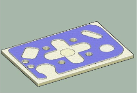
Résultat de simulation — pièce usinée virtuellement
Résultat final
Ce projet a permis de maîtriser l'ensemble de la chaîne numérique CAD/CAM/CNC : de la modélisation 3D sous SolidWorks à la programmation en langage Heidenhain Klartext, en passant par la sélection et l'optimisation des paramètres d'usinage. Le programme de 62 lignes couvre des opérations variées (contournage, poches circulaires et rectangulaires, rainures, perçage en motif polaire) et démontre l'intérêt des outils numériques modernes pour garantir précision et efficacité en usinage.
Montage d'usinage — Conception pour perçage de pièces cylindriques
L'objectif du projet était de concevoir un montage d'usinage permettant de positionner et maintenir une pièce cylindrique pendant une opération de perçage, en respectant les principes d'isostatisme, de simplicité de fabrication et de coût réduit. Le montage devait être ergonomique, rigide et adapté à une utilisation sur perceuse à colonne.
Analyse de la pièce
Le travail a commencé par l'analyse du dessin de définition de la pièce afin d'identifier les surfaces fonctionnelles nécessaires à la mise en position. La pièce devait être positionnée en prenant appui sur le cylindre principal, sur une surface plane et sur les surfaces latérales de la rainure afin d'obtenir une liaison encastrement isostatique.
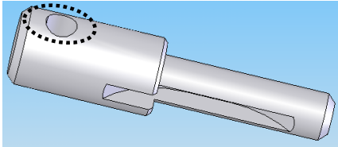
Pièce cylindrique à percer — trou à réaliser (pointillés)
Mise en position — Rainure chanfreinée
La mise en position a été réalisée à l'aide d'un système de rainure permettant de positionner la pièce sur sa partie cylindrique principale. Des chanfreins ont été ajoutés afin d'améliorer le contact et éviter l'endommagement de la pièce tout en permettant un contrôle rapide des pièces hors tolérance.
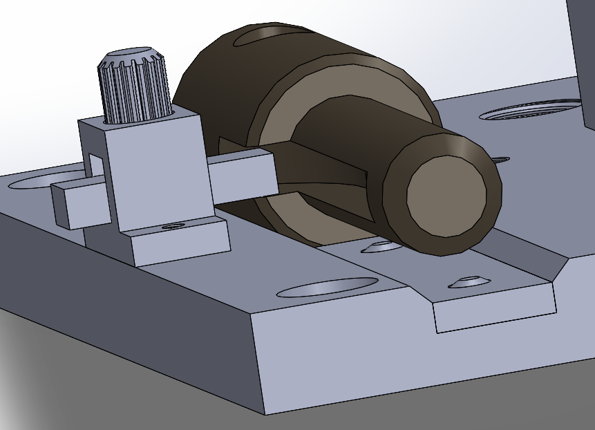
Vue détaillée — pièce positionnée dans la rainure
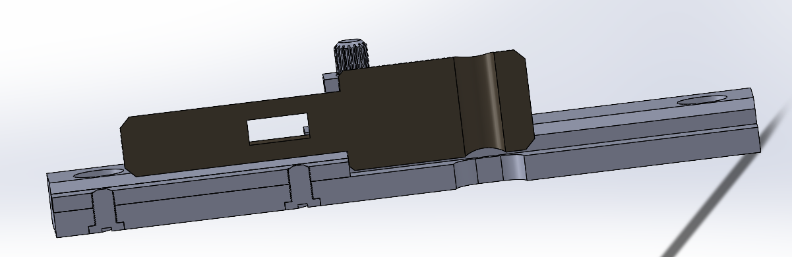
Rainure chanfreinée
Blocage de rotation
Un système de blocage de rotation réglable par vis moletée a été ajouté afin de garantir l'orientation correcte de la pièce pendant le perçage.
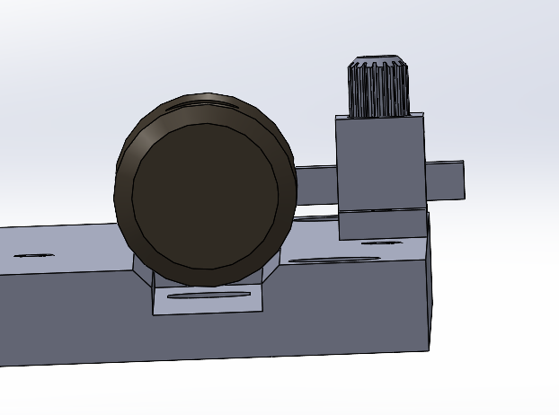
Blocage de rotation par vis moletée
Maintien en position — Sauterelle
Le maintien en position a été assuré par une sauterelle horizontale permettant un serrage rapide, fiable et ergonomique. Ce système permet un bridage efficace tout en facilitant la mise en place et le retrait rapide des pièces.
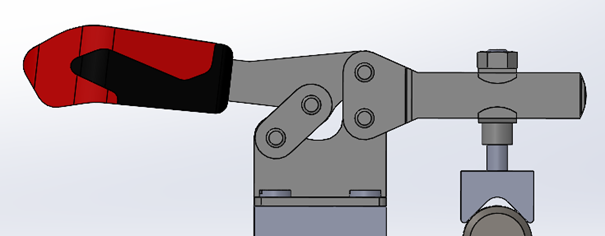
Sauterelle horizontale de serrage
Éléments complémentaires
Des éléments complémentaires ont ensuite été intégrés afin d'assurer le bon fonctionnement du montage :
Espace de dégagement pour le passage du foret
Canon de perçage pour guider le foret
Support de canon
Poignée pour améliorer l'ergonomie
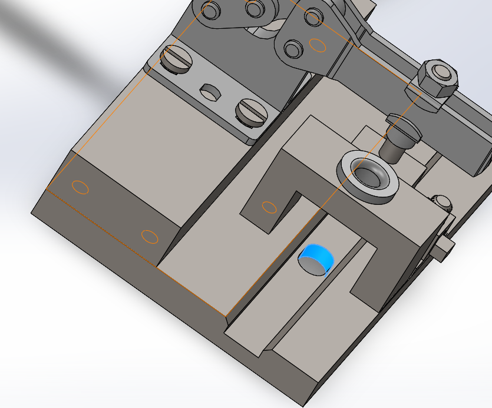
Espace de dégagement pour le foret
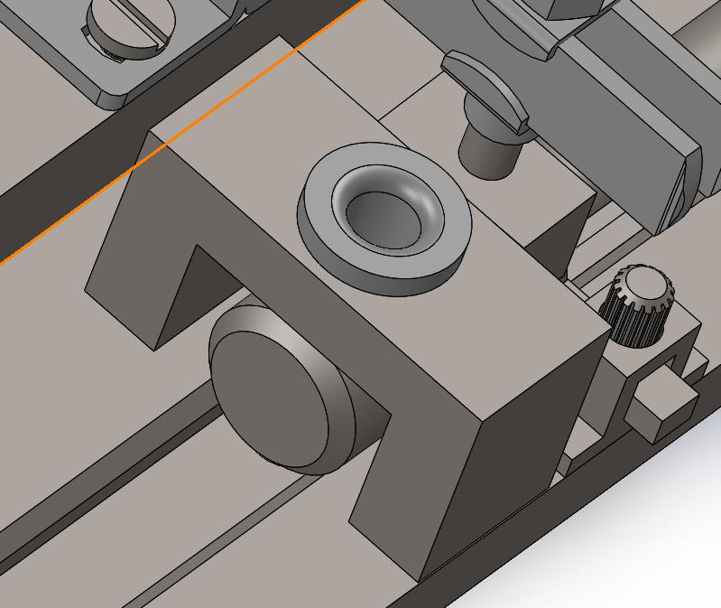
Support de canon de perçage
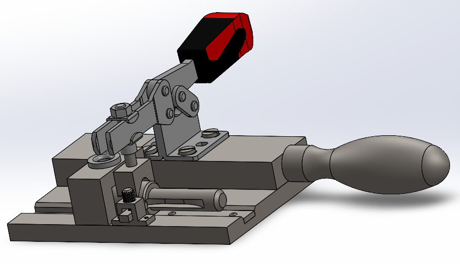
Montage complet avec sauterelle et poignée
Mise en plan finale
Le projet s'est terminé par la réalisation de la mise en plan complète du montage d'usinage.
Mise en plan finale du montage d'usinage
Résultat final
Le montage conçu permet un positionnement isostatique précis, un serrage rapide et une bonne ergonomie d'utilisation. La solution retenue combine efficacité mécanique, simplicité de fabrication et réduction des coûts.
Multiplicateur de pression hydraulique — Conception et optimisation de pièces de fonderie
L'objectif du projet était de concevoir des pièces de vérin hydraulique destinées à être fabriquées par fonderie aluminium, puis de valider leur tenue mécanique par simulation éléments finis. Une phase d'optimisation a ensuite été réalisée afin de réduire la masse des pièces tout en conservant leurs performances mécaniques et fonctionnelles.
Analyse du système
Le travail a commencé par l'analyse du fonctionnement d'un multiplicateur de pression hydraulique utilisant un piston différentiel permettant d'augmenter la pression du fluide. Cette étape a permis d'identifier le rôle des différentes pièces ainsi que les surfaces fonctionnelles essentielles.
Plan d'ensemble du multiplicateur de pression
Conception de la tête de vérin
La tête de vérin a ensuite été conçue en intégrant les règles de conception des pièces de fonderie : choix du plan de joint, angles de dépouille, contrôle des épaisseurs et conservation des surfaces fonctionnelles. La pièce a été modélisée en 3D sous SolidWorks.
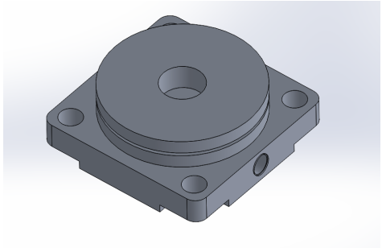
Modèle 3D de la tête de vérin
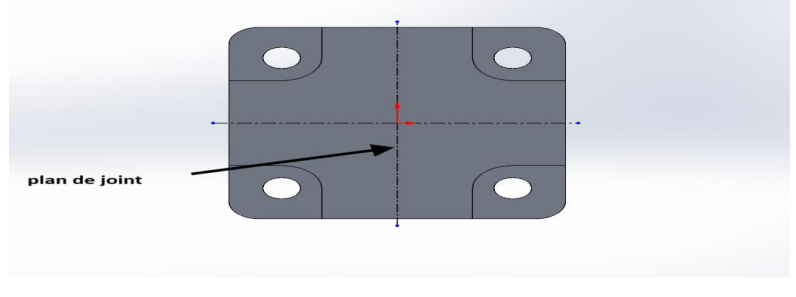
Plan de joint de la tête de vérin
Validation mécanique — Tête de vérin
Une validation mécanique a été réalisée par simulation en prenant en compte la pression du fluide, les efforts de serrage des goujons et les conditions de montage réelles. Les résultats ont confirmé la tenue mécanique et la rigidité de la pièce.
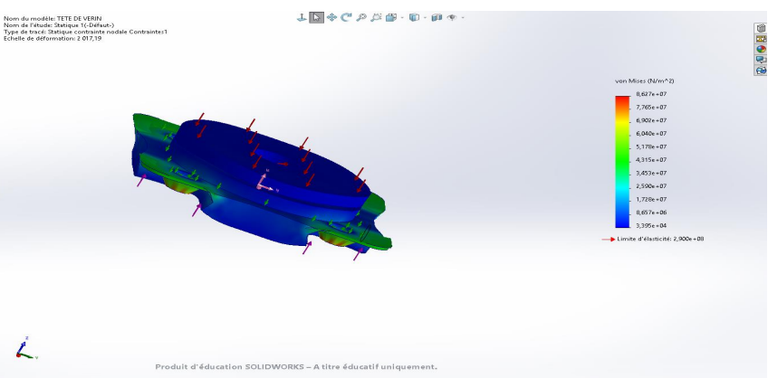
Simulation contraintes Von Mises — tête de vérin
Optimisation — Tête de vérin
La tête de vérin a ensuite été optimisée en retirant de la matière dans les zones faiblement sollicitées, tout en conservant les zones fonctionnelles.
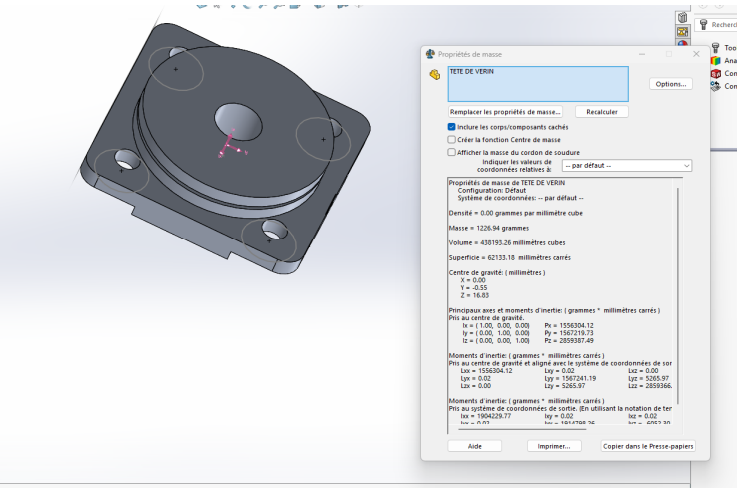
Avant optimisation — 1 226,94 g
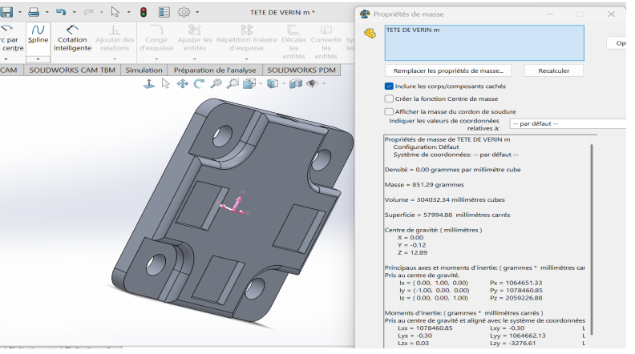
Après optimisation — 851,29 g
Masse avant optimisation1 226,94 g
Masse après optimisation851,29 g
Gain de masse~376 g (−31%)
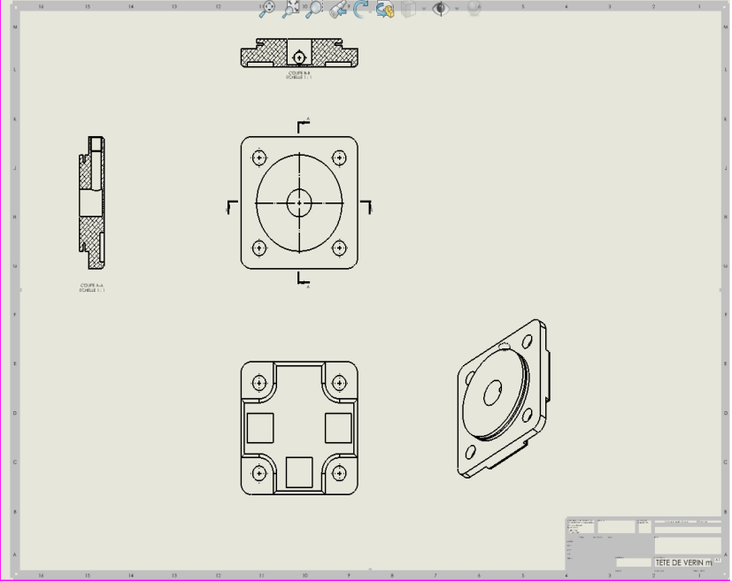
Mise en plan — tête de vérin optimisée
Conception de l'embase
L'embase du vérin a ensuite été conçue en respectant les contraintes de fabrication par fonderie et les surfaces fonctionnelles liées au montage et au passage du fluide. La conception a été pensée pour faciliter la fabrication et l'assemblage.
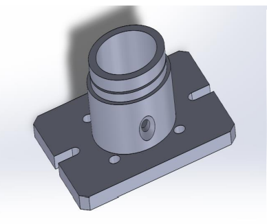
Vue 3D de l'embase assemblée
Validation mécanique — Embase
Une simulation mécanique a permis de vérifier la tenue mécanique et la rigidité de l'embase sous pression hydraulique et efforts de serrage.
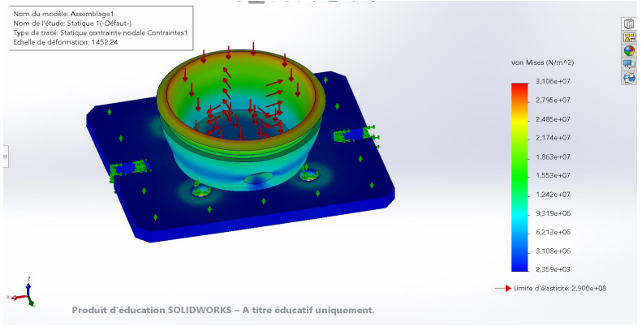
Simulation contraintes Von Mises — embase
Optimisation — Embase
Une optimisation géométrique a ensuite été réalisée en retirant de la matière dans les zones peu sollicitées tout en conservant les zones soumises à de fortes contraintes.
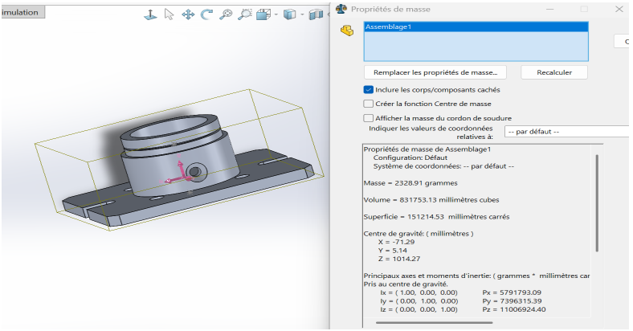
Avant optimisation — 2 381,91 g
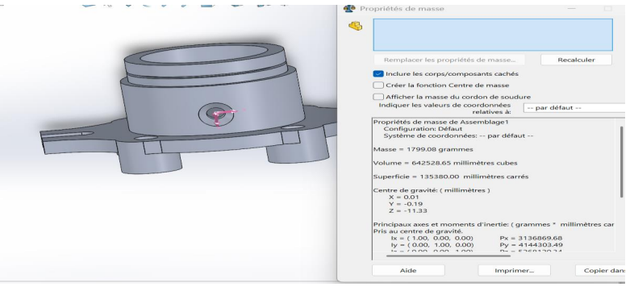
Après optimisation — 1 799,08 g
Masse avant optimisation2 381,91 g
Masse après optimisation1 799,08 g
Gain de masse~583 g (−24%)
Mise en plan finale — Embase
Le projet s'est terminé par la réalisation de la mise en plan industrielle de l'embase optimisée permettant sa fabrication.
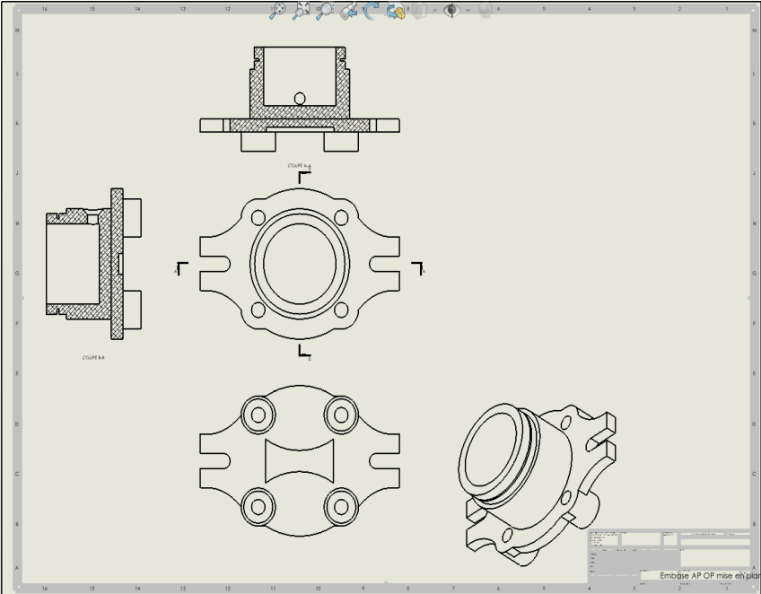
Mise en plan finale — embase optimisée
Résultat final
Le projet a permis de concevoir des pièces de fonderie optimisées, adaptées à la fabrication industrielle, tout en garantissant leur tenue mécanique et leur rigidité par simulation numérique.
Renvoi conique aéronautique — Conception et modélisation CAO
SolidWorksDimensionnementRoulements SKFEngrenages coniquesConception carter
Le projet porte sur la conception d'un renvoi conique aéronautique répondant à des contraintes de durée de vie, fiabilité, vitesse de rotation et masse. Le schéma cinématique global a permis d'identifier l'architecture du mécanisme ainsi que les zones de reprise d'efforts nécessaires au dimensionnement.
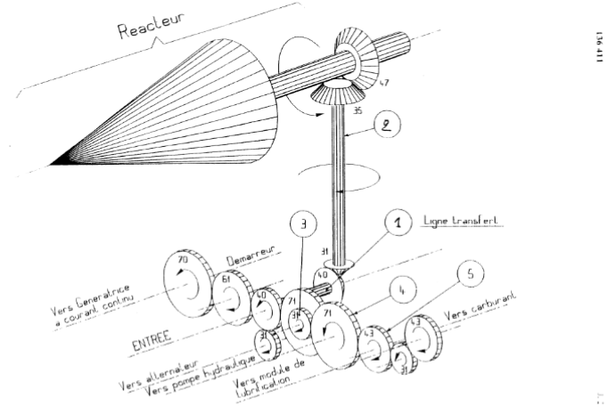
Schéma cinématique global du renvoi conique
Étude et dimensionnement des roulements
L'objectif initial était de déterminer les roulements aux points A et B en respectant les exigences du cahier des charges. Deux solutions techniques ont été comparées :
Un montage avec roulement rigide à billes et roulement à rouleaux cylindriques
Un montage avec deux roulements à billes à contact oblique en X
Les calculs ont été menés en conditions majorantes puis en conditions de fonctionnement réelles (cycle de vol). Aucune solution issue de la documentation initiale ne satisfaisant simultanément les critères de charge, vitesse et durée de vie, une recherche dans le catalogue SKF a été réalisée afin d'obtenir un compromis entre performances et masse.
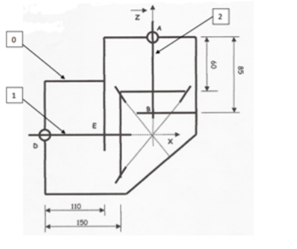
Schéma d'implantation des roulements A et B
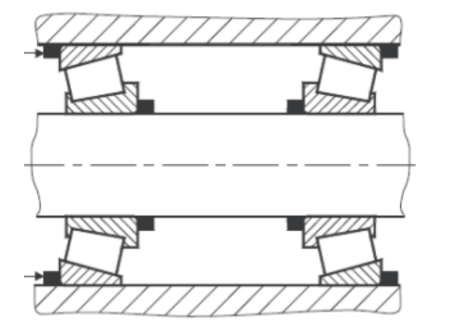
Montage en X des roulements
Les roulements retenus permettent de répondre aux contraintes tout en réduisant significativement la masse de l'ensemble.
Modélisation des engrenages et des arbres
Les pignons coniques ont été modélisés sous SolidWorks à partir des données fonctionnelles (nombre de dents, module, matériau). Les arbres ont été conçus avec des épaulements assurant le maintien axial des composants et la transmission du couple sans glissement.
Pignon d'entrée — 31 dents
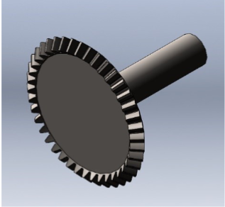
Pignon de sortie — 40 dents
Assemblage CAO de la transmission
L'ensemble arbres – roulements – engrenages a été assemblé en respectant les tolérances et conditions de montage afin de garantir le bon positionnement des composants et la durée de vie du système.
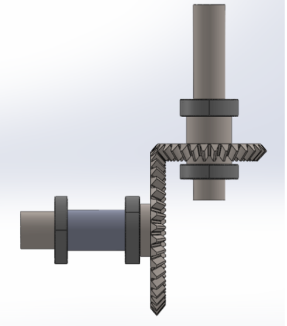
Assemblage complet de la transmission
Conception du carter — Système 1 : plan de joint au milieu
Un premier carter compact et simple à assembler a été conçu. Cependant, le positionnement du plan de joint dans la zone lubrifiée entraînait :
Des risques de fuite d'huile
Un désalignement possible des roulements
Une diminution de la fiabilité
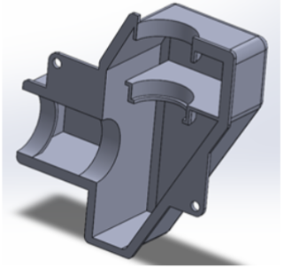
Carter système 1 — vue en coupe
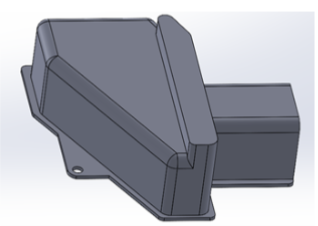
Carter système 1 — vue extérieure
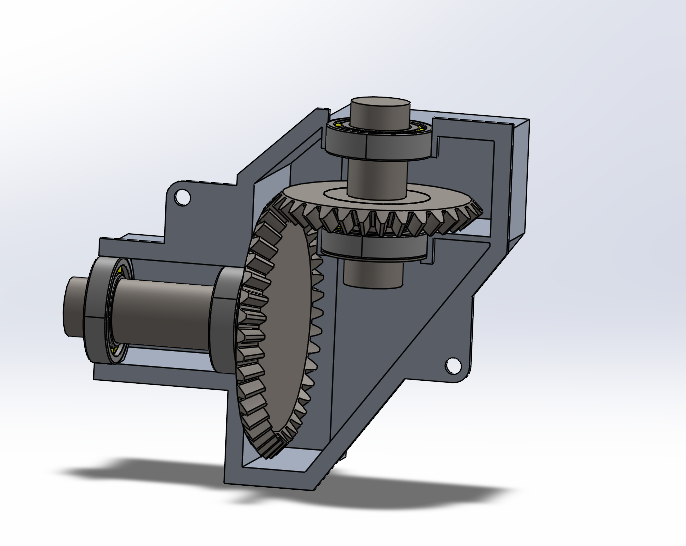
Fonctionnement interne — système 1
Système retenu — Carter avec plan de joint déporté
La géométrie du carter a été modifiée afin de déplacer le plan de joint hors du volume lubrifié.
Cette solution a été choisie car elle :
Améliore fortement l'étanchéité
Garantit un meilleur alignement des roulements
Augmente la fiabilité du système
Ce qui constitue un critère prioritaire en aéronautique.
En revanche, cette architecture rend le montage moins accessible et nécessite davantage d'opérations d'usinage. Une amélioration de la conception reste donc nécessaire afin d'optimiser l'accessibilité au montage et à la maintenance, dans une optique d'industrialisation.
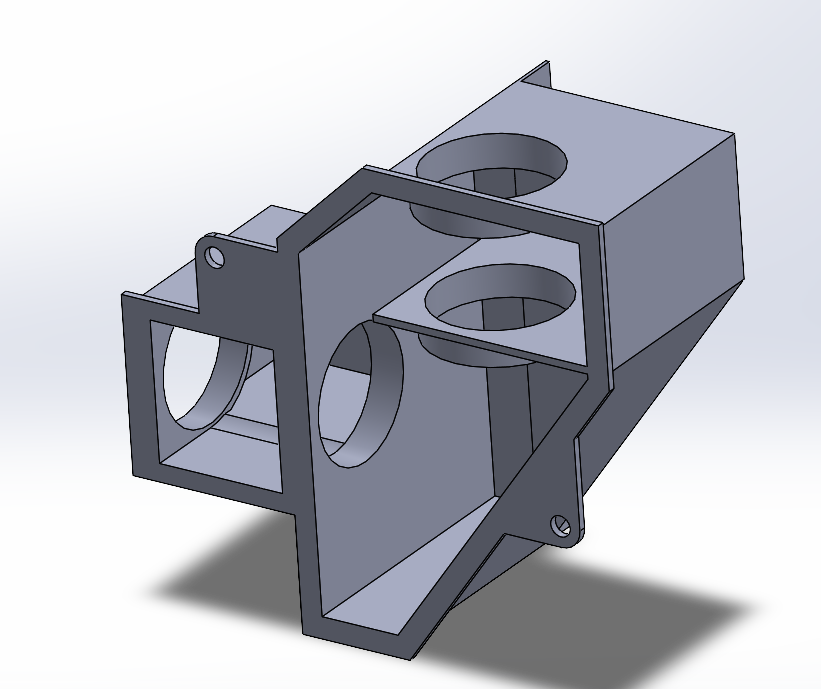
Modification géométrique du carter — plan de joint déporté
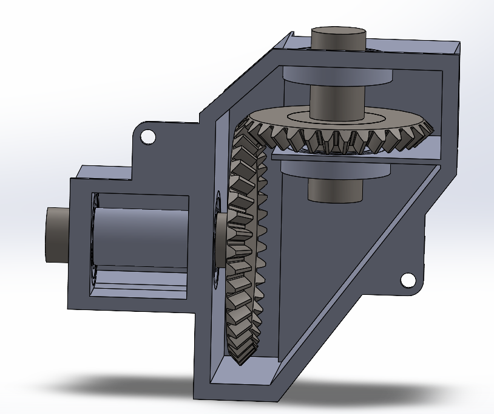
Fonctionnement interne — système 2
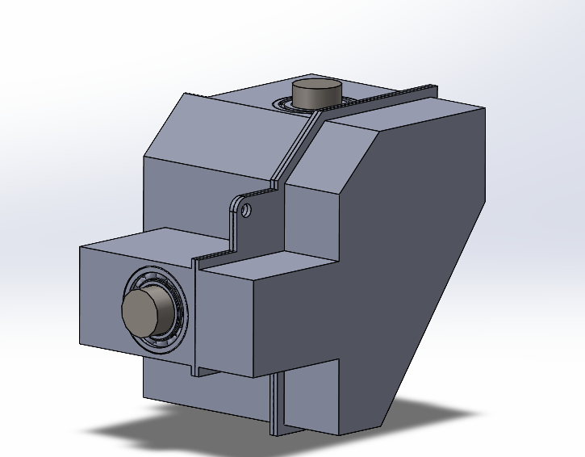
Assemblage complet — système retenu
Résultat
Ce projet a permis de développer un avant-projet complet de renvoi conique en appliquant une démarche de conception basée sur la comparaison de solutions, le dimensionnement réel de composants, l'intégration CAO et la gestion des compromis entre performance, masse, fiabilité et industrialisation.
CSWA — Certified SolidWorks Associate (Design)
Dassault SystèmesSolidWorksConceptionFévrier 2026
Certificat officiel
Certification professionnelle délivrée par Dassault Systèmes, attestant des compétences en conception mécanique assistée par ordinateur avec SolidWorks.